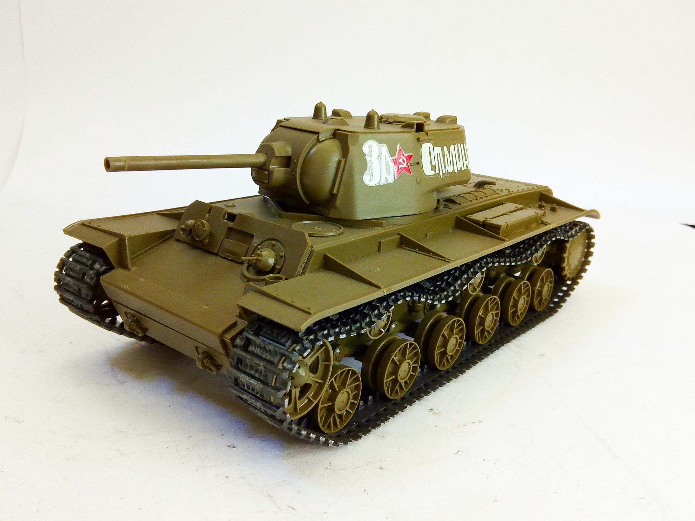
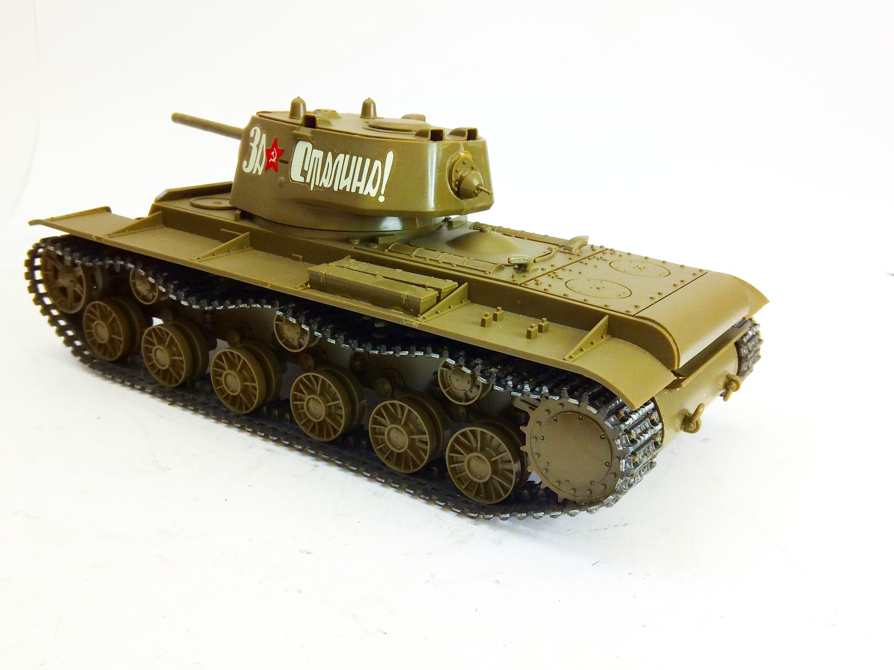

Mezzi militari · scale model archive
KV1 tank
KV1 tank — Kit: Tamiya, Scale: 1/35. Some trick to allow vinyl track droop... #1/35 #Tamiya

Photo gallery

English description
Some trick to allow vinyl track droop...
#1/35 #Tamiya
Descrizione italiana
Some trick una allow vinyl track droop...